All schedules shown are reconstructed before MILP/LP reference solving. Certified optima are quality references. PDF links preserve report-size vector figures. Recorded producer costs do not isolate a complete primary-pipeline runtime. Read README.md for definitions and limitations.
00_primary_quality_table
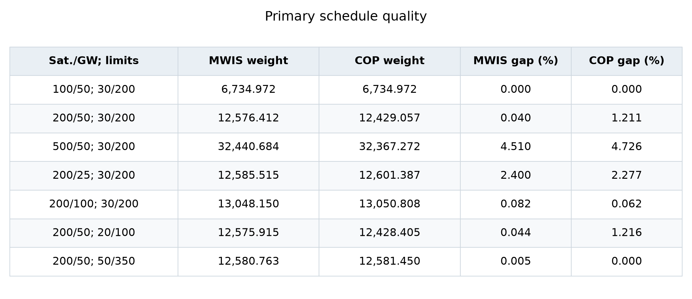
Primary reconstructed schedule weights, before MILP/LP reference evaluation. Limits are logical variables/couplers. Gaps are retrospective distances to certified reference optima; all primary schedules are feasible. The shared baseline is listed once. Full-precision values and reference optima are in primary_quality_summary.csv.
01_primary_quality_scaling
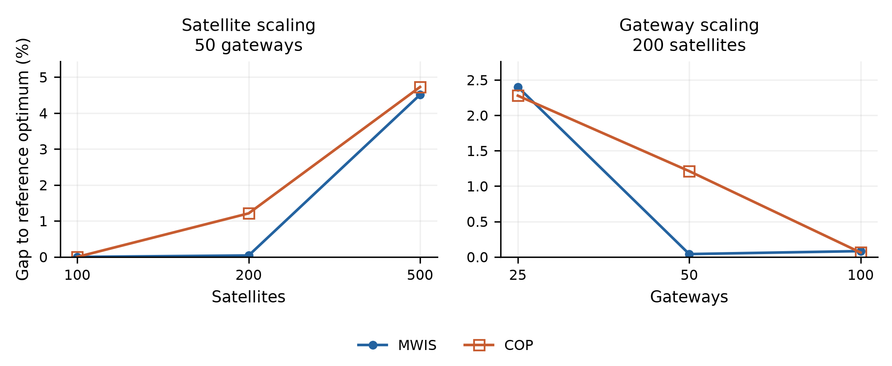
Primary schedule gaps to certified reference optima, excluding MILP-generated contacts. Left: satellite scaling; right: gateway scaling. The baseline is reused. Active resource identities are not fully nested, so differences describe the selected scenarios rather than a strictly isolated resource-count effect. Both methods use the same candidate CSV within each pair.
02_primary_schedule_provenance
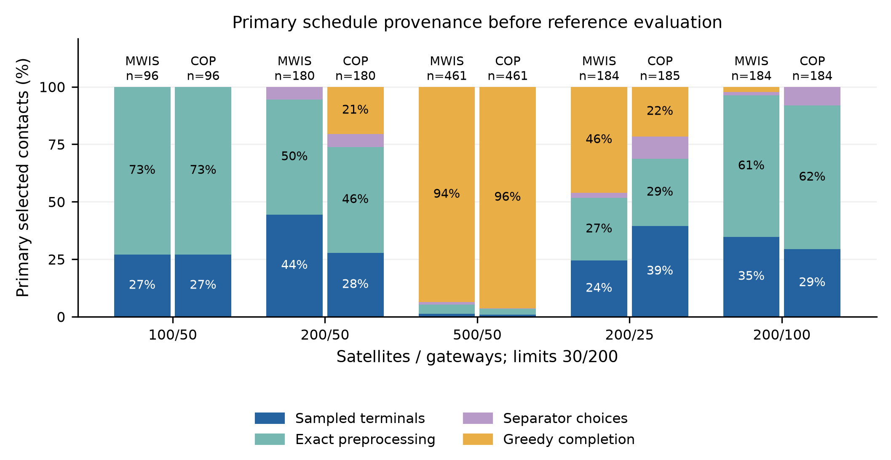
Origins of contacts retained in the selected pre-MILP reconstruction, with paired MWIS/COP bars for the five distinct datasets. n is each primary schedule's contact count. MILP is not a category. These are contact shares, not objective shares, execution time or a causal measure of sampling advantage. Sampled alternative branches discarded by reconstruction do not contribute. All seven profiles' contact and weight provenance are in comparison_metrics.csv.
03_terminal_profile_tradeoff
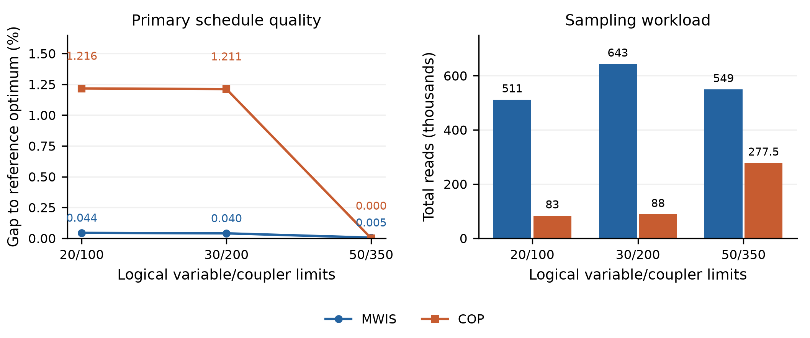
Same frozen 200/50 input for all three combined limit profiles. Left: primary quality gap; right: total sampled reads over all exported alternative terminal branches. Both methods use 500 reads per terminal. Read counts are sampling workload, not total runtime. Both logical limits change together; changing them also changes the decomposition.
04_baseline_logical_dimensions
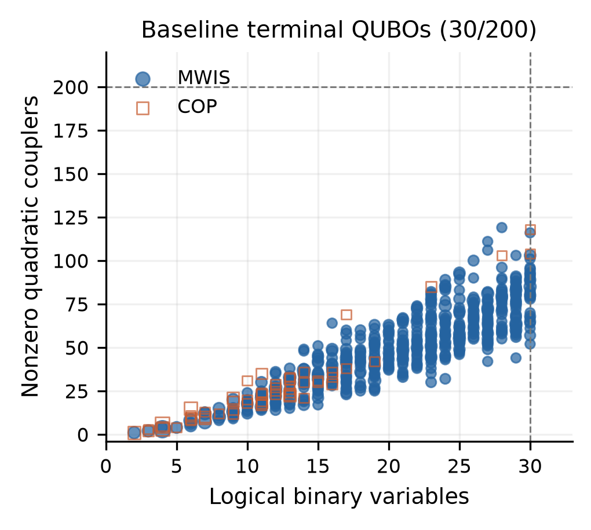
All sampled baseline terminal QUBOs, including alternative branches. Marker area increases with repeated dimension pairs; dashed lines are logical limits. One-hot MWIS and domain-wall COP counts use common binary-variable/coupler units. These are not physical qubits, chains or embedding overhead; no hardware embedding was performed. Include this PDF at 86 mm width.
05_producer_stage_profile
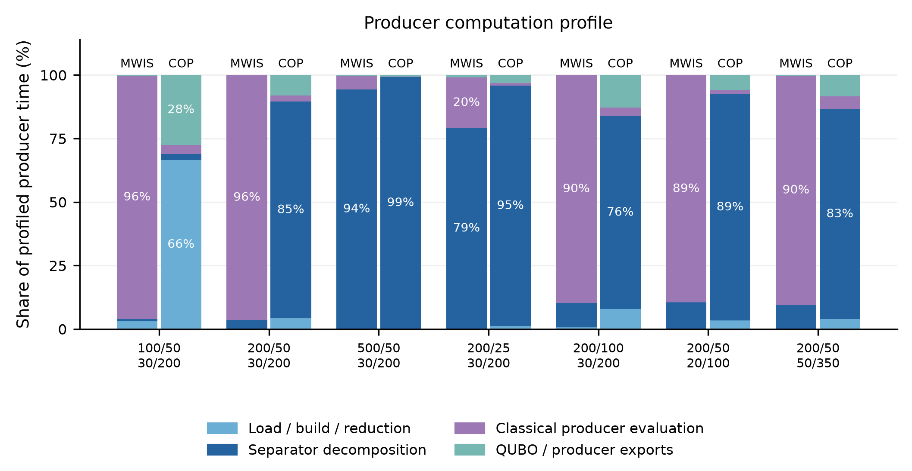
Shares of four disjoint logged producer phases, excluding unprofiled notebook overhead, sampling, reconstruction and MILP/LP solver calls. Classical producer evaluation includes exact terminal reference evaluation and incomplete-leaf evaluation; it is displayed separately and is not sampling. Recursive reductions lie within decomposition. Nested component/operation clocks are not added again. Absolute seconds are in timing_records.csv; shares do not establish a controlled speed comparison. This is not a complete primary-pipeline runtime.
01a_primary_quality_satellite_scaling
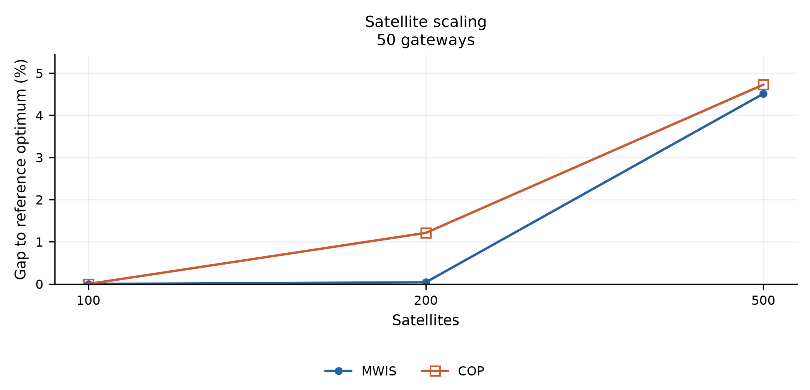
Primary schedule gaps to certified reference optima, excluding MILP-generated contacts. Satellite scaling with 50 gateways and limits 30/200. The baseline is reused. Active resource identities are not fully nested, so differences describe the selected scenarios rather than a strictly isolated resource-count effect. Both methods use the same candidate CSV within each pair.
01b_primary_quality_gateway_scaling
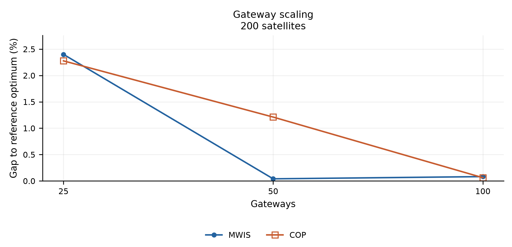
Primary schedule gaps to certified reference optima, excluding MILP-generated contacts. Gateway scaling with 200 satellites and limits 30/200. The baseline is reused. Active resource identities are not fully nested, so differences describe the selected scenarios rather than a strictly isolated resource-count effect. Both methods use the same candidate CSV within each pair.
03a_terminal_profile_primary_quality
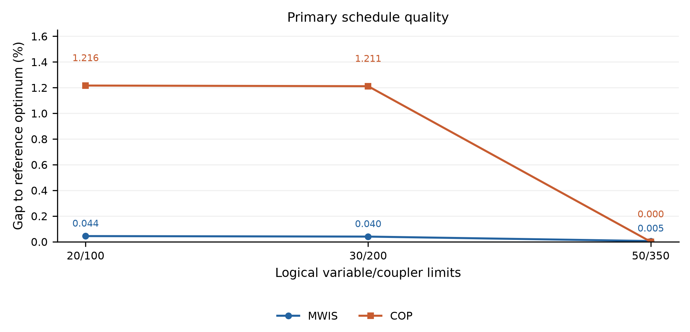
Same frozen 200/50 input for all three combined limit profiles. Primary schedule gap to the certified reference optimum, before MILP evaluation. Both methods use 500 reads per terminal. Read counts are sampling workload, not total runtime. Both logical limits change together; changing them also changes the decomposition.
03b_terminal_profile_sampling_workload
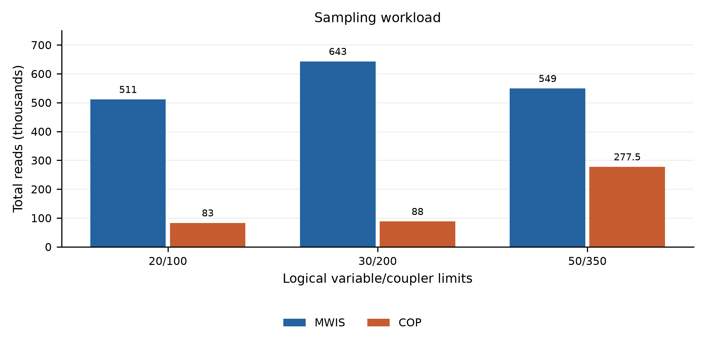
Same frozen 200/50 input for all three combined limit profiles. Total sampled reads over all exported alternative terminal branches, including branches discarded in reconstruction. Both methods use 500 reads per terminal. Read counts are sampling workload, not total runtime. Both logical limits change together; changing them also changes the decomposition.
01a_primary_quality_satellite_scaling_column
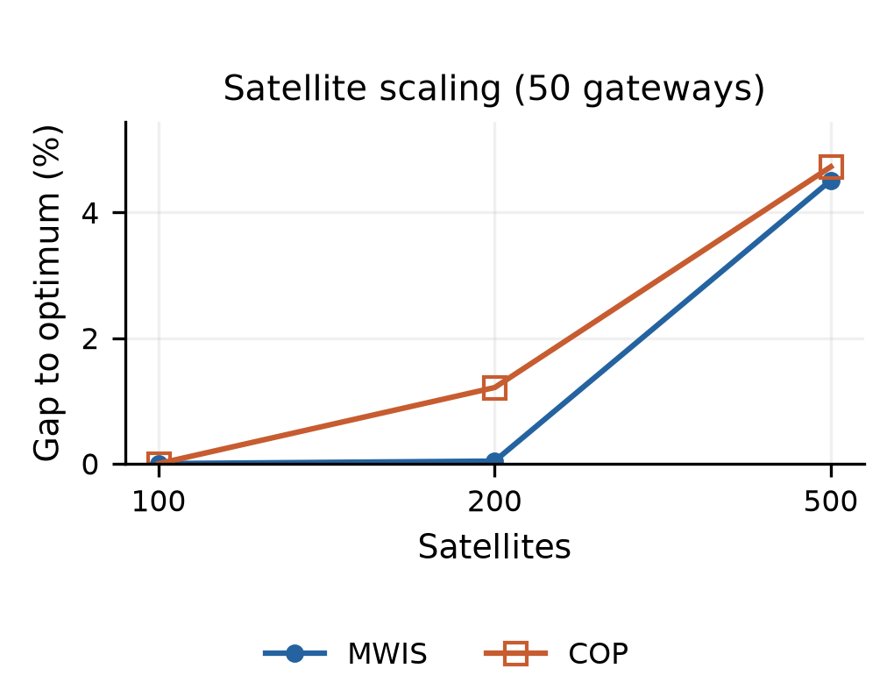
Primary schedule gaps to certified reference optima, excluding MILP-generated contacts. Satellite scaling with 50 gateways and limits 30/200. The baseline is reused. Active resource identities are not fully nested, so differences describe the selected scenarios rather than a strictly isolated resource-count effect. Both methods use the same candidate CSV within each pair.
01b_primary_quality_gateway_scaling_column
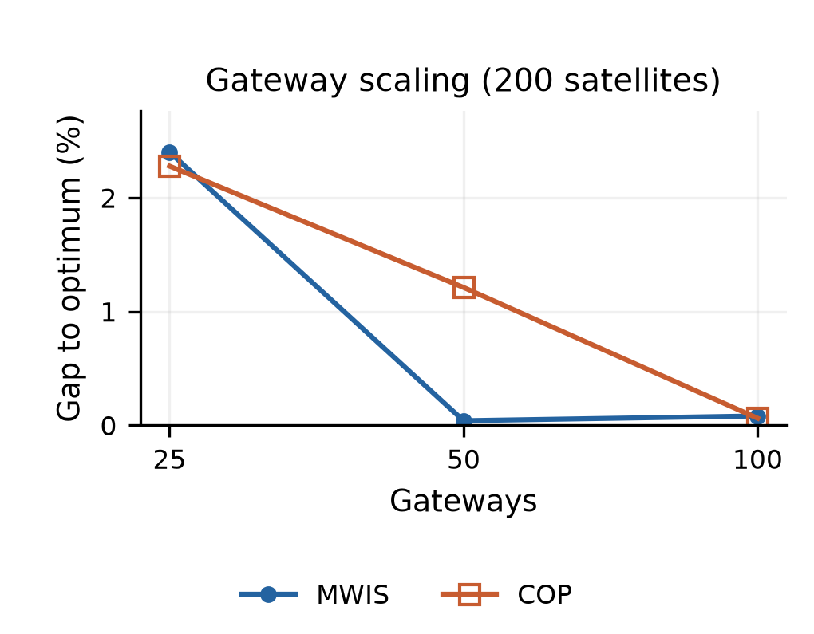
Primary schedule gaps to certified reference optima, excluding MILP-generated contacts. Gateway scaling with 200 satellites and limits 30/200. The baseline is reused. Active resource identities are not fully nested, so differences describe the selected scenarios rather than a strictly isolated resource-count effect. Both methods use the same candidate CSV within each pair.
03a_terminal_profile_primary_quality_column
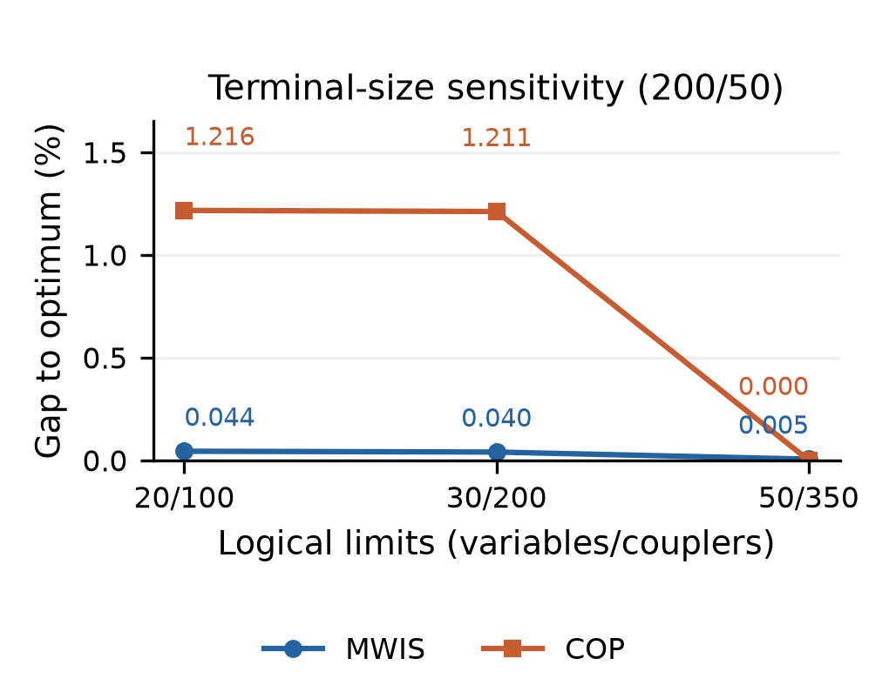
Same frozen 200/50 input for all three combined limit profiles. Primary schedule gap to the certified reference optimum, before MILP evaluation. Both methods use 500 reads per terminal. Read counts are sampling workload, not total runtime. Both logical limits change together; changing them also changes the decomposition.
Supplementary
S01_primary_retention_and_incomplete_leaves
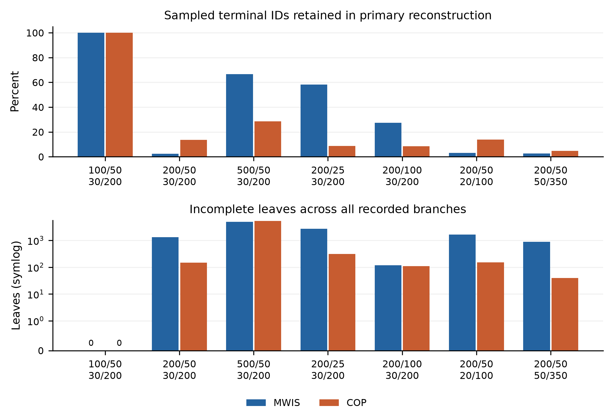
Retention is evaluated before MILP: terminal IDs present in the selected reconstruction divided by all sampled terminal IDs. It is not a contact share. Incomplete leaves count all recorded alternatives, not just the selected branch. Zero incomplete leaves are shown explicitly. The shared baseline appears once.
S02_average_terminal_dimensions
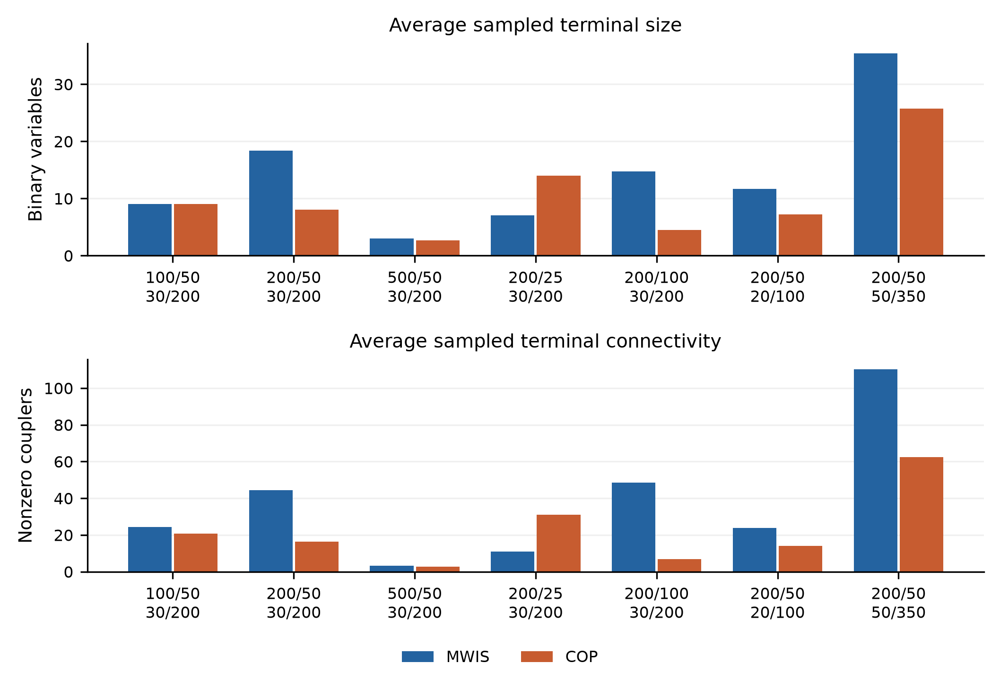
Arithmetic means across all non-empty sampled terminals, including alternatives discarded during reconstruction. These are workload dimensions, not sizes of the full unresolved problem or exclusively of retained terminals. Binary-variable and coupler units are common to both encodings.
S03_common_reduced_component_structure
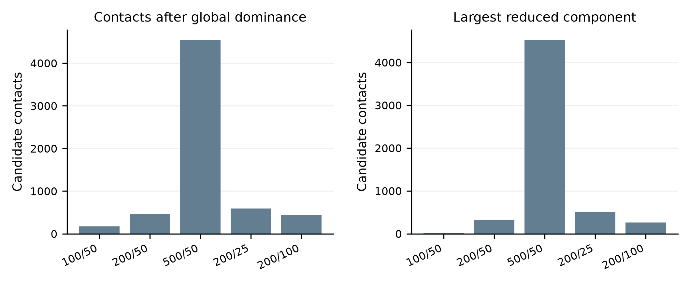
One bar per dataset represents both methods: retained weighted vertices and edge sets are independently hash-checked identical after global dominance. Sizes are candidate contacts, not COP satellite variables. Only the five distinct datasets are shown; terminal profiles reuse the same reduced 200/50 graph.
S04_terminal_and_incomplete_leaf_distributions
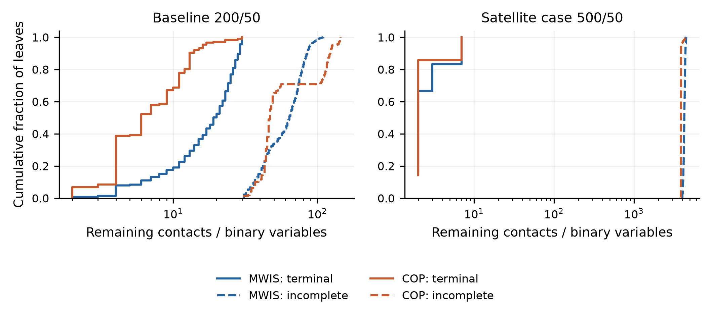
Empirical distributions of all recorded terminal and incomplete leaves for the baseline and largest satellite case. They describe bounded-tree workloads, not repeated-run uncertainty. Empty fixed-choice leaves are excluded. Means of sampled terminal sizes alone can conceal large unresolved pieces. Current encodings use one bit per retained contact alternative.
S01a_primary_terminal_retention
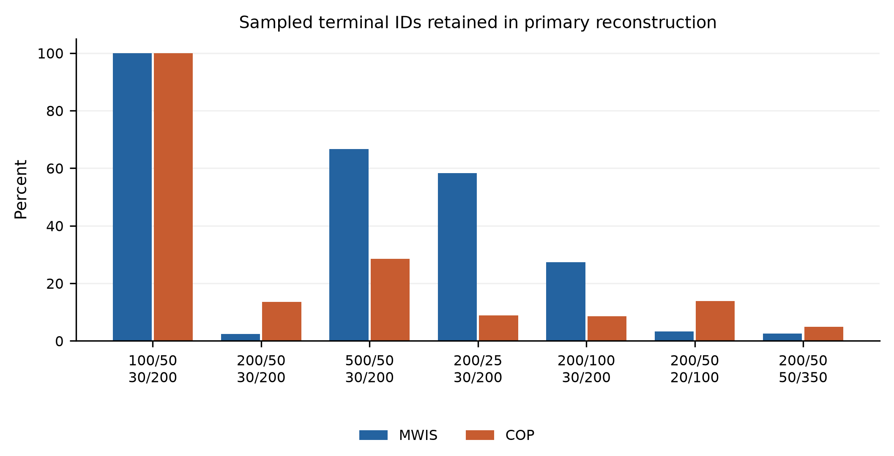
Fraction of sampled terminal IDs retained in the selected primary reconstruction, before MILP replacement. It is not a contact or objective share, and does not measure sampling workload saved. The shared baseline appears once.
S01b_incomplete_leaves
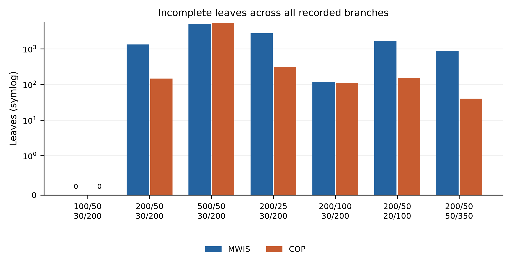
Incomplete leaves across all recorded decomposition branches, including alternatives discarded in primary reconstruction. The symlog scale shows zero leaves explicitly. Counts are bounded-tree workload, not counts of natural connected components. The shared baseline appears once.
S02a_average_terminal_variables
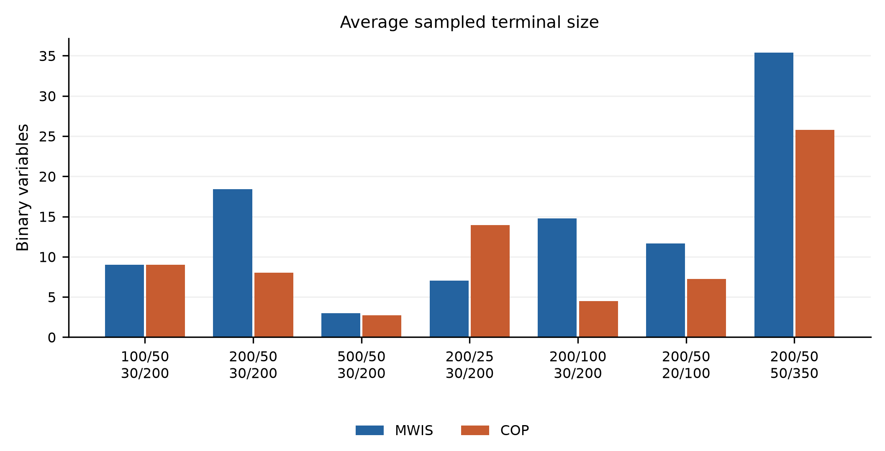
Arithmetic means across all non-empty sampled terminals, including alternatives discarded during reconstruction. These are workload dimensions, not sizes of the full unresolved problem or exclusively of retained terminals. Sizes count logical binary variables, not COP satellite variables or physical qubits.
S02b_average_terminal_couplers
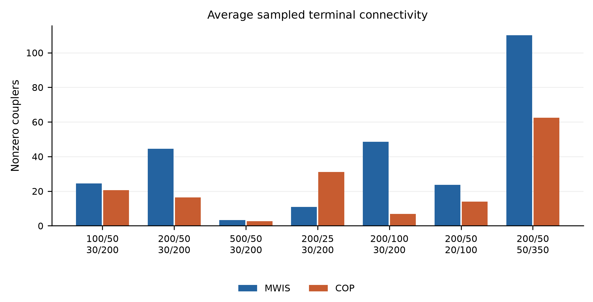
Arithmetic means across all non-empty sampled terminals, including alternatives discarded during reconstruction. These are workload dimensions, not sizes of the full unresolved problem or exclusively of retained terminals. Connectivity counts nonzero logical quadratic couplers, not physical hardware couplers.
S03a_contacts_after_global_dominance
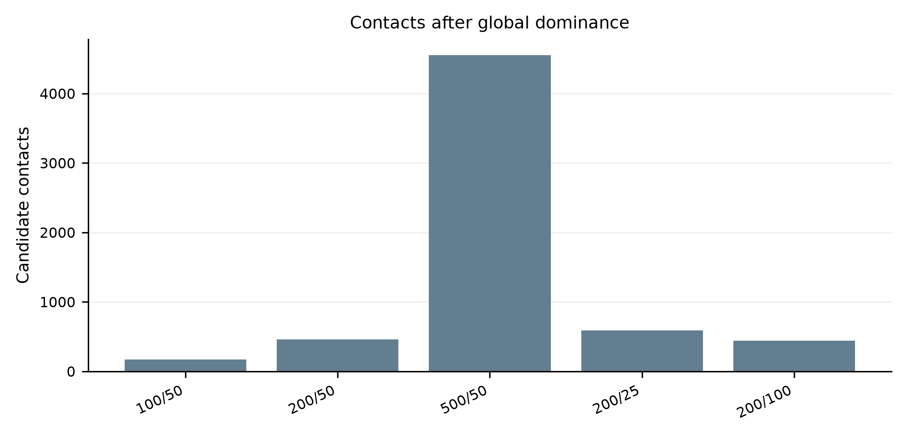
One bar per dataset represents both methods: retained weighted vertices and edge sets are independently hash-checked identical after global dominance. Sizes are candidate contacts, not COP satellite variables. Only the five distinct datasets are shown; terminal profiles reuse the same reduced 200/50 graph.
S03b_largest_reduced_component
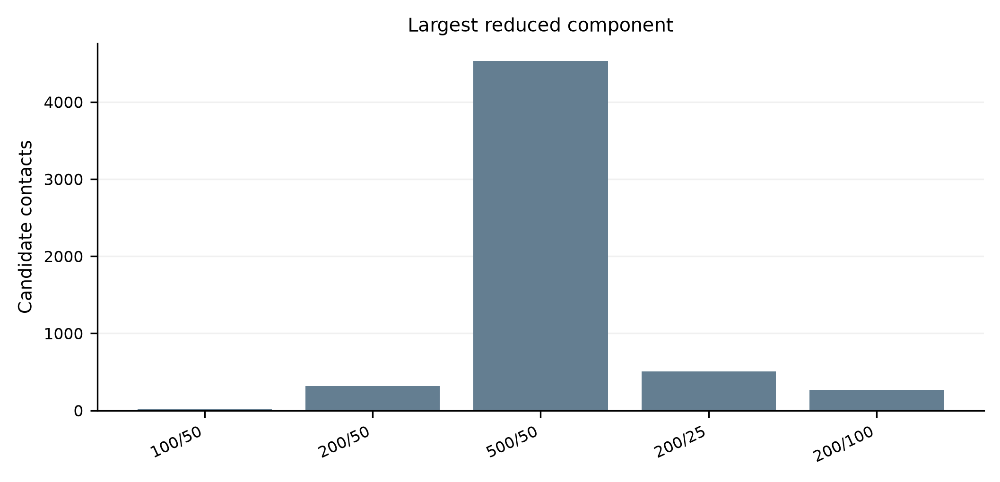
One bar per dataset represents both methods: retained weighted vertices and edge sets are independently hash-checked identical after global dominance. Sizes are candidate contacts, not COP satellite variables. Only the five distinct datasets are shown; terminal profiles reuse the same reduced 200/50 graph.
S04a_leaf_distributions_baseline
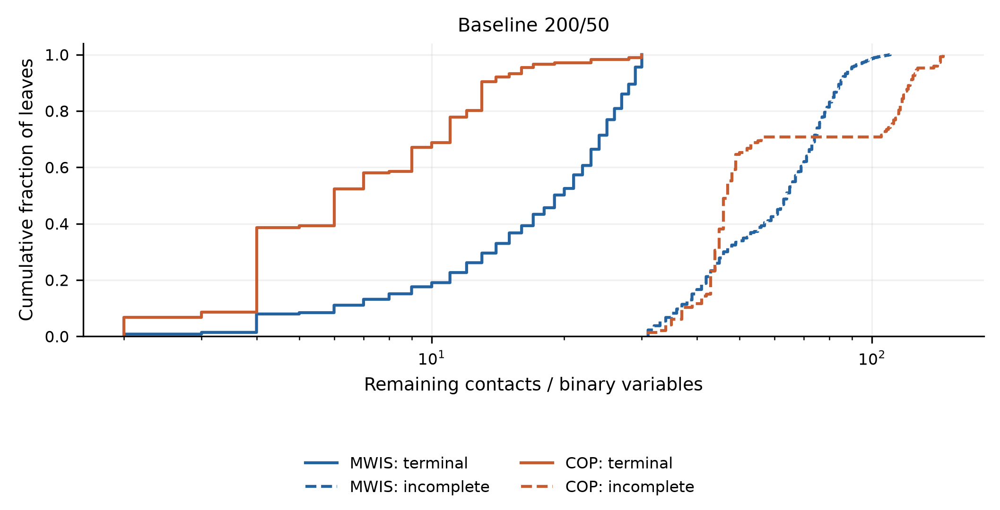
Empirical distributions of all recorded terminal and incomplete leaves for the baseline 200/50 case. They describe bounded-tree workloads, not repeated-run uncertainty. Empty fixed-choice leaves are excluded. Means of sampled terminal sizes alone can conceal large unresolved pieces. Current encodings use one bit per retained contact alternative.
S04b_leaf_distributions_s500_g50
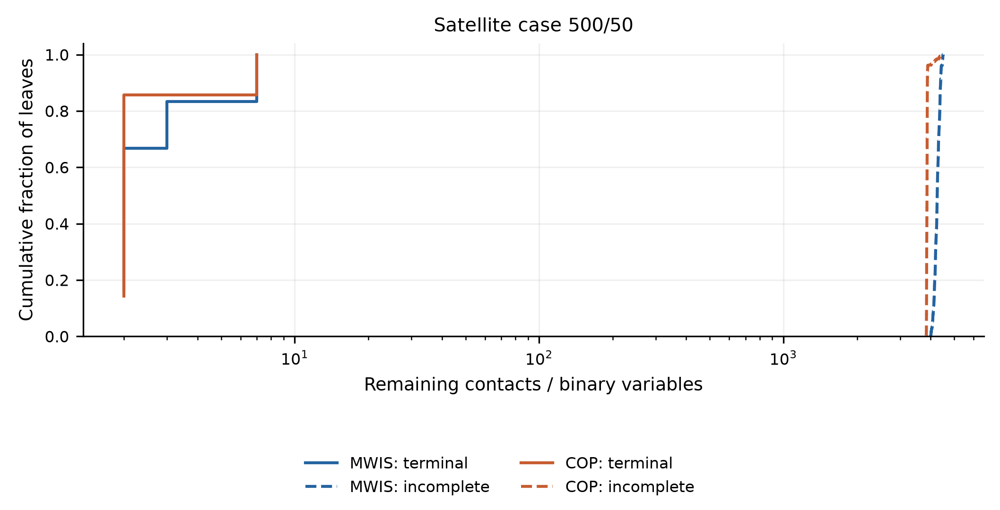
Empirical distributions of all recorded terminal and incomplete leaves for the largest satellite case, 500/50. They describe bounded-tree workloads, not repeated-run uncertainty. Empty fixed-choice leaves are excluded. Means of sampled terminal sizes alone can conceal large unresolved pieces. Current encodings use one bit per retained contact alternative.
Operational Supplement
schedule_gantt_s100_g50_primary_excerpt
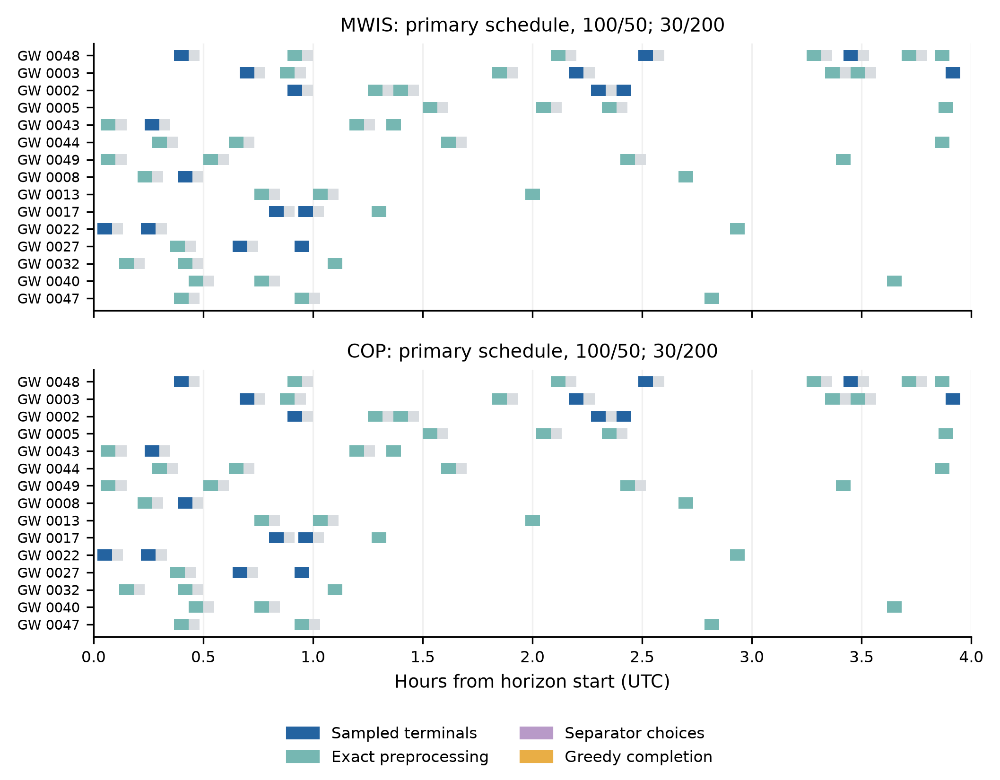
Primary schedule excerpt before reference solving: the 15 gateways with highest combined MWIS/COP primary contact counts, ties by station ID. Both panels use the same gateway order and four-hour horizon. Contacts are coloured by primary provenance; grey setup reservations occur only between successive selected contacts. This is an excerpt, not the full schedule. All primary contacts and all gateways are exported in schedule_metrics.csv and gateway_metrics.csv.
gateway_activity_s100_g50_primary_excerpt
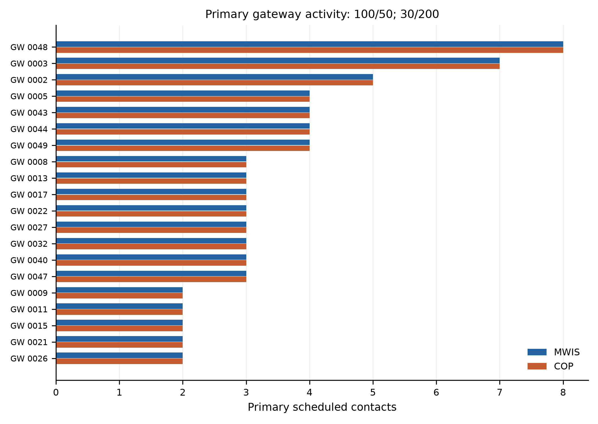
Primary contact counts for the 20 busiest gateways ranked by combined MWIS/COP counts, with deterministic station-ID ties. Remaining and zero-contact gateways are retained in gateway_metrics.csv. Counts concern the simplified single-antenna, one-contact-per-satellite model, not real network efficiency. Contact minutes and service occupancy (excluding setup) are available for every gateway in the exported table.
schedule_gantt_baseline_primary_excerpt
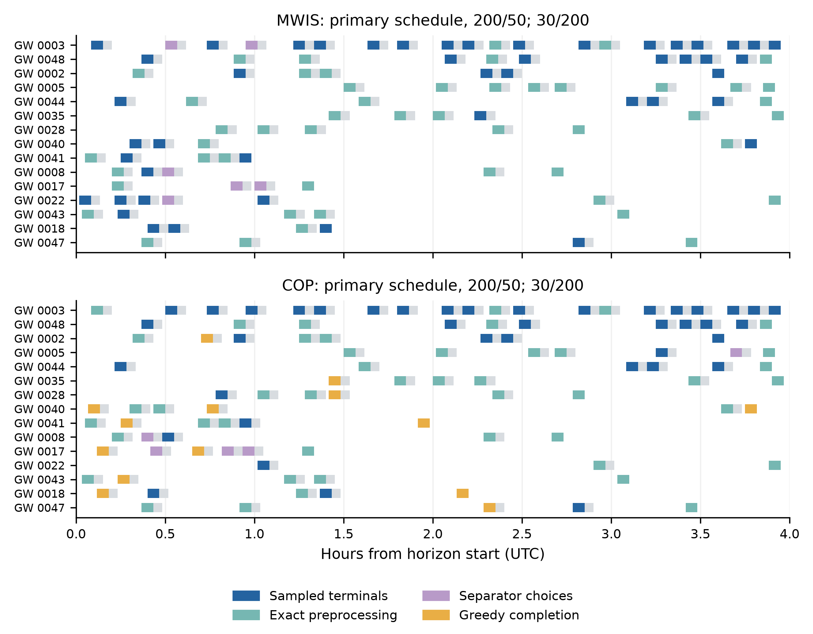
Primary schedule excerpt before reference solving: the 15 gateways with highest combined MWIS/COP primary contact counts, ties by station ID. Both panels use the same gateway order and four-hour horizon. Contacts are coloured by primary provenance; grey setup reservations occur only between successive selected contacts. This is an excerpt, not the full schedule. All primary contacts and all gateways are exported in schedule_metrics.csv and gateway_metrics.csv.
gateway_activity_baseline_primary_excerpt
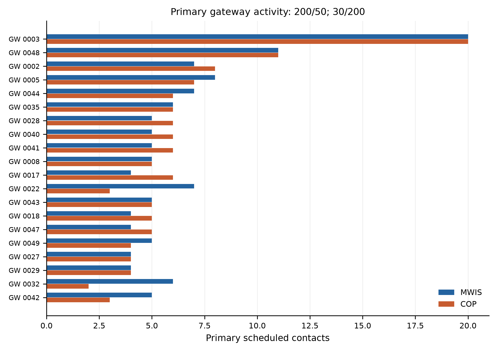
Primary contact counts for the 20 busiest gateways ranked by combined MWIS/COP counts, with deterministic station-ID ties. Remaining and zero-contact gateways are retained in gateway_metrics.csv. Counts concern the simplified single-antenna, one-contact-per-satellite model, not real network efficiency. Contact minutes and service occupancy (excluding setup) are available for every gateway in the exported table.
schedule_gantt_s500_g50_primary_excerpt
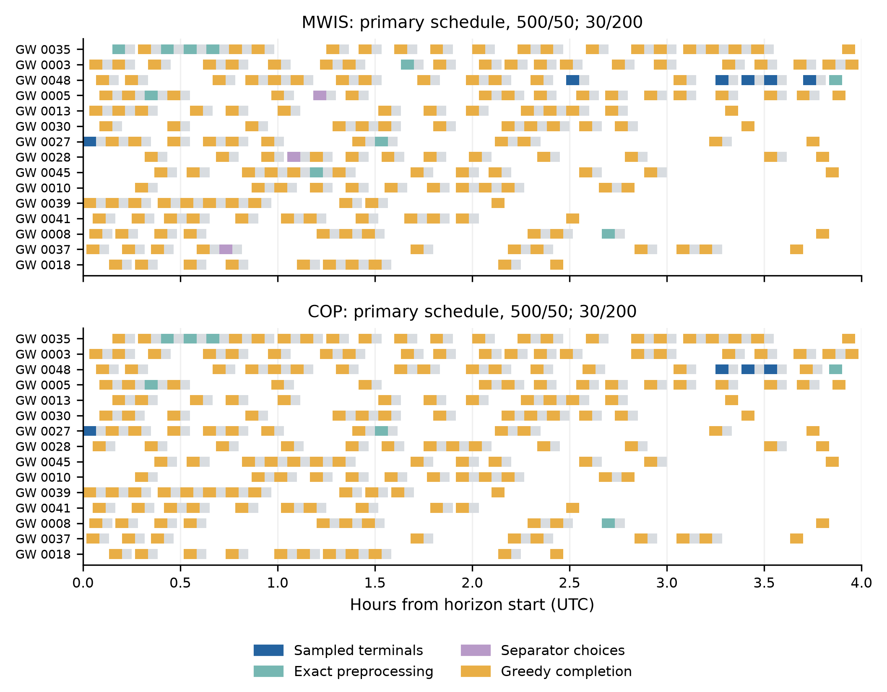
Primary schedule excerpt before reference solving: the 15 gateways with highest combined MWIS/COP primary contact counts, ties by station ID. Both panels use the same gateway order and four-hour horizon. Contacts are coloured by primary provenance; grey setup reservations occur only between successive selected contacts. This is an excerpt, not the full schedule. All primary contacts and all gateways are exported in schedule_metrics.csv and gateway_metrics.csv.
gateway_activity_s500_g50_primary_excerpt
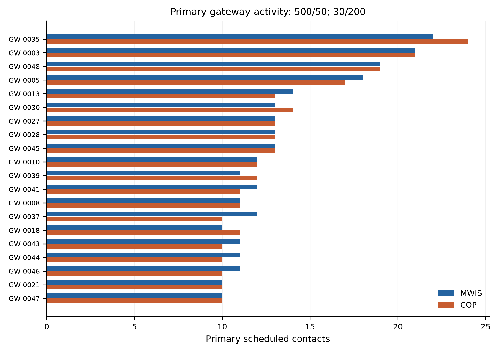
Primary contact counts for the 20 busiest gateways ranked by combined MWIS/COP counts, with deterministic station-ID ties. Remaining and zero-contact gateways are retained in gateway_metrics.csv. Counts concern the simplified single-antenna, one-contact-per-satellite model, not real network efficiency. Contact minutes and service occupancy (excluding setup) are available for every gateway in the exported table.
schedule_gantt_s200_g25_primary_excerpt
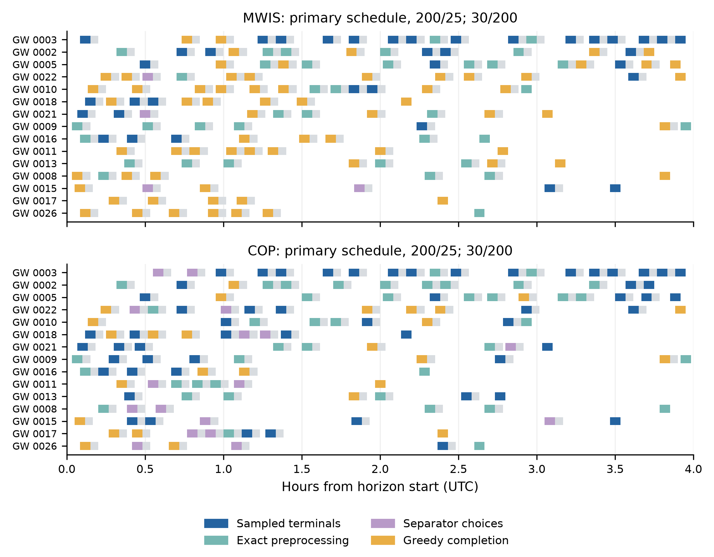
Primary schedule excerpt before reference solving: the 15 gateways with highest combined MWIS/COP primary contact counts, ties by station ID. Both panels use the same gateway order and four-hour horizon. Contacts are coloured by primary provenance; grey setup reservations occur only between successive selected contacts. This is an excerpt, not the full schedule. All primary contacts and all gateways are exported in schedule_metrics.csv and gateway_metrics.csv.
gateway_activity_s200_g25_primary_excerpt
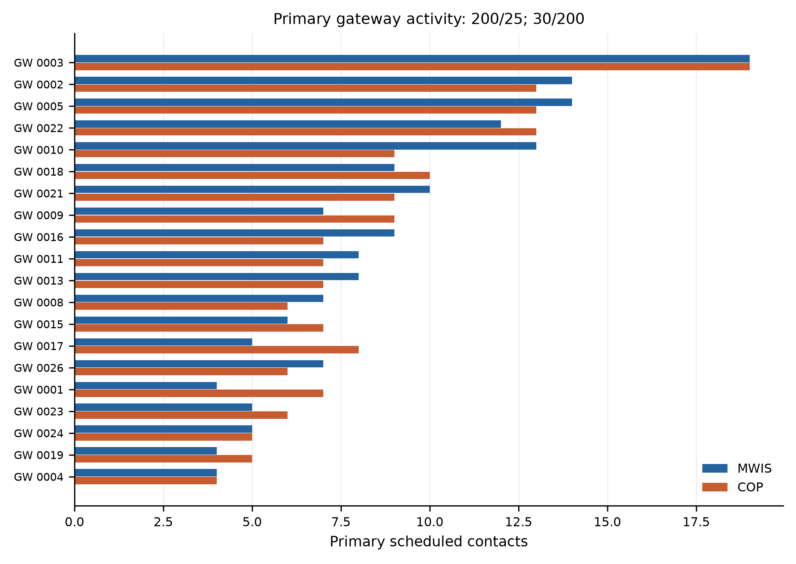
Primary contact counts for the 20 busiest gateways ranked by combined MWIS/COP counts, with deterministic station-ID ties. Remaining and zero-contact gateways are retained in gateway_metrics.csv. Counts concern the simplified single-antenna, one-contact-per-satellite model, not real network efficiency. Contact minutes and service occupancy (excluding setup) are available for every gateway in the exported table.
schedule_gantt_s200_g100_primary_excerpt
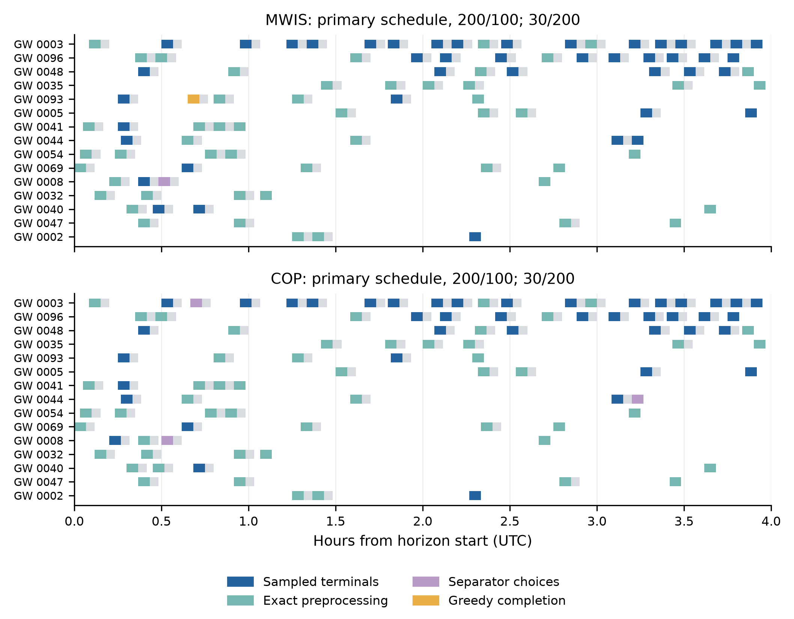
Primary schedule excerpt before reference solving: the 15 gateways with highest combined MWIS/COP primary contact counts, ties by station ID. Both panels use the same gateway order and four-hour horizon. Contacts are coloured by primary provenance; grey setup reservations occur only between successive selected contacts. This is an excerpt, not the full schedule. All primary contacts and all gateways are exported in schedule_metrics.csv and gateway_metrics.csv.
gateway_activity_s200_g100_primary_excerpt
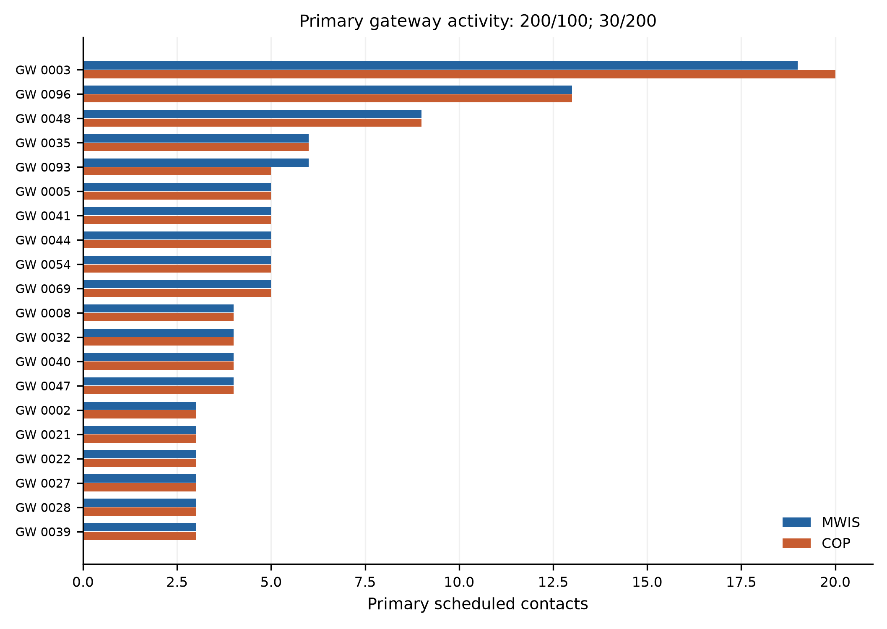
Primary contact counts for the 20 busiest gateways ranked by combined MWIS/COP counts, with deterministic station-ID ties. Remaining and zero-contact gateways are retained in gateway_metrics.csv. Counts concern the simplified single-antenna, one-contact-per-satellite model, not real network efficiency. Contact minutes and service occupancy (excluding setup) are available for every gateway in the exported table.
schedule_gantt_n20_c100_primary_excerpt
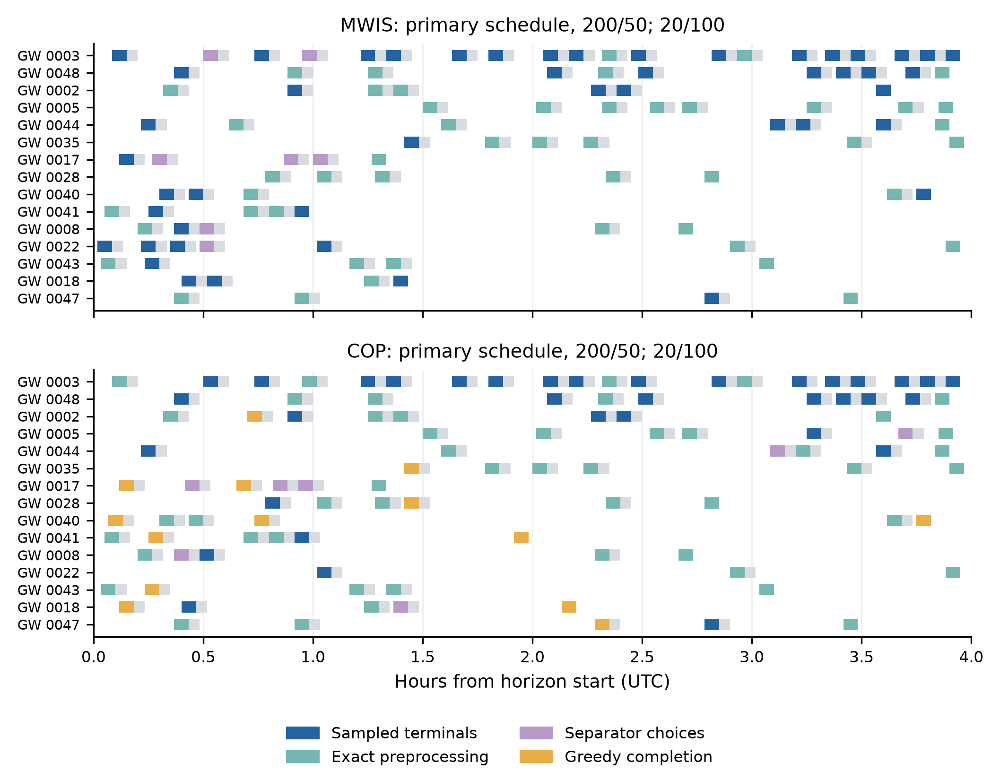
Primary schedule excerpt before reference solving: the 15 gateways with highest combined MWIS/COP primary contact counts, ties by station ID. Both panels use the same gateway order and four-hour horizon. Contacts are coloured by primary provenance; grey setup reservations occur only between successive selected contacts. This is an excerpt, not the full schedule. All primary contacts and all gateways are exported in schedule_metrics.csv and gateway_metrics.csv.
gateway_activity_n20_c100_primary_excerpt
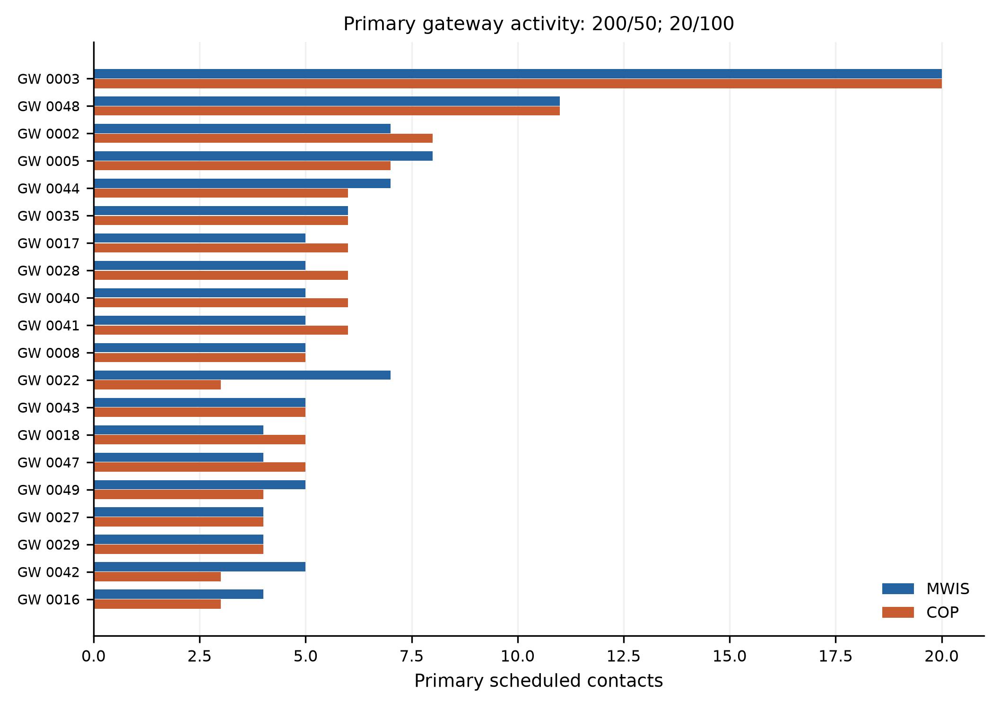
Primary contact counts for the 20 busiest gateways ranked by combined MWIS/COP counts, with deterministic station-ID ties. Remaining and zero-contact gateways are retained in gateway_metrics.csv. Counts concern the simplified single-antenna, one-contact-per-satellite model, not real network efficiency. Contact minutes and service occupancy (excluding setup) are available for every gateway in the exported table.
schedule_gantt_n50_c350_primary_excerpt
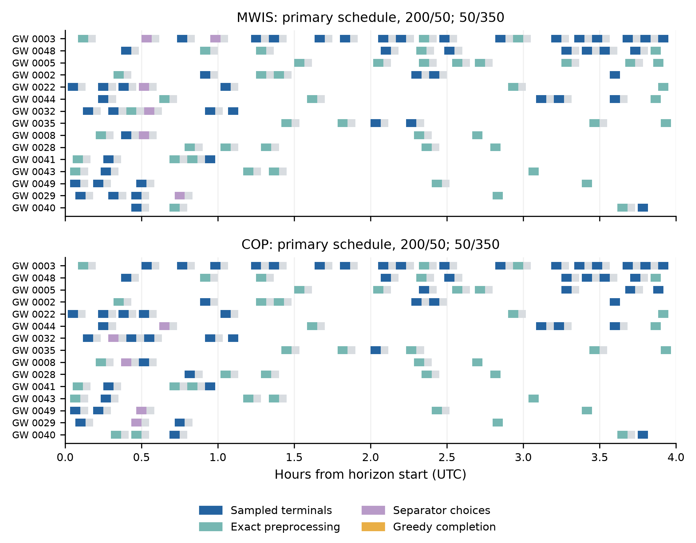
Primary schedule excerpt before reference solving: the 15 gateways with highest combined MWIS/COP primary contact counts, ties by station ID. Both panels use the same gateway order and four-hour horizon. Contacts are coloured by primary provenance; grey setup reservations occur only between successive selected contacts. This is an excerpt, not the full schedule. All primary contacts and all gateways are exported in schedule_metrics.csv and gateway_metrics.csv.
gateway_activity_n50_c350_primary_excerpt
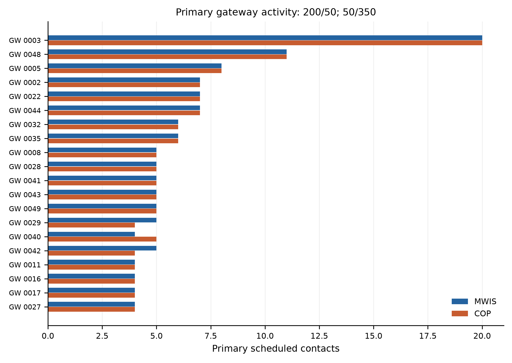
Primary contact counts for the 20 busiest gateways ranked by combined MWIS/COP counts, with deterministic station-ID ties. Remaining and zero-contact gateways are retained in gateway_metrics.csv. Counts concern the simplified single-antenna, one-contact-per-satellite model, not real network efficiency. Contact minutes and service occupancy (excluding setup) are available for every gateway in the exported table.